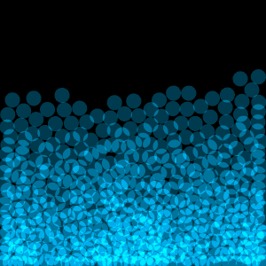

Cząsteczkowa symulacja cieczy utworzona w Processing - środowisku opartym na języku Java. Odwzorowuje zachowanie cieczy symulując działajace na cząsteczki czynniki takie jak grawitacja, ciśnienie i "lepkość". Podobnie jak większość moich prac, została ona napisana od zera, bez użycia żadnych silników fizycznych. Na ostatnim załączonym gifie widać wersję, która pozwala na popychanie cząsteczek wody przy użyciu myszki, oraz podświetla cząsteczki w zależności od tego jak szybko się poruszają.

